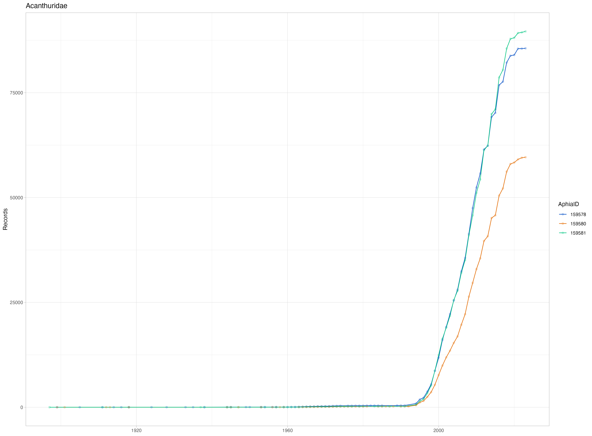

Using DuckDB to query the OBIS occurrence dataset - Part 1
OBIS now has a occurrence dataset in GeoParquet format, but to work with large datasets you need the right tools. Here we explore how you can use DuckDB to (very) quickly retrieve data from this resource.
The OBIS occurrence dataset
OBIS has more than 160 million occurrence records available (and growing!). Previously you could download the occurrence dataset as a single Parquet file and do a range of analysis with it, but since recently the occurrence dataset became available in AWS through the Open Data Program. This came with a total update of the way the data is offered. Now the occurrence dataset is offered as GeoParquet files, what opens up a world of possibilities in doing spatial analysis with the data, and also make analysis much more efficient and cloud performant. This new version also contains all measurements of the eMoF extension.
There are two ways you can access this dataset: download it locally or access directly from the AWS bucket. In both cases, we need the right tools to work with it. So, let’s dive in this three parts tutorial. On the first part we will talk about DuckDB, and how to do basic SQL queries. On the second part we will check the spatial capabilities of DuckDB. Finally, on the third part we will explore duckplyr, an R package that brings the tidyverse grammar to work with DuckDB on R.
Note
Are you a Python user? Worry thy not - the SQL syntax we will discuss here is the same you need to use on Python with the
duckdblibrary. But it is on our to-do list to add Python examples to this tutorial!
Work together
We have created a Jupyter Notebook, so you can work through this tutorial together with us. You can either download it locally or, even easier, open it through Google Colab. Just click here to go there.
A quick word about GeoParquets
We already talked about Parquet and its many benefits in a previous tutorial. GeoParquet extends the core Parquet to efficiently store and query geospatial vector data. It adds a geometry column, and some geospatial metadata to the file. It means that we can very quickly filter data that is on a certain region, for example. More on that on the next tutorial.
And what is DuckDB?
DuckDB is a lightweight SQL database designed for analytics. It makes it easy to query large files like CSVs or Parquet, and can speed up your analytical workflow. DuckDB have APIs for many languages, including R and Python.
To use DuckDB you need to learn SQL (Structured Query Language), the standard language used to work with databases. There are many versions of the SQL language, depending on the management system you are dealing with (e.g. MySQL, PostgreSQL, etc.), and DuckDB also has its own version, which you can learn in their documentation. We will not go in depth on the SQL language, but just provide you with the basic commands to start!
Essential SQL commands
- SELECT: retrieves data from a table
- FROM: which table to get the data from
- WHERE: filters rows based on a condition
- ORDER BY: sorts the results
- LIMIT: restricts how many rows are returned
- GROUP BY: groups rows so you can calculate things like sums, counts, or averages
A simple SQL query from a Parquet file would look like that:
SELECT AphiaID, COUNT(*) AS records
FROM read_parquet('../obis_full_export.parquet')
WHERE family = 'Acanthuridae'
GROUP BY AphiaID
ORDER BY records DESC;
Note
Usually SQL commands are written on UPPERCASE, but that is not necessary for DuckDB calls - indeed, in our in-house code you will usually find all commands in lower case.
Let’s do some analysis
Ok, now that we have the basic knowledge of SQL, we can start exploring the OBIS occurrence dataset. As we said, you can access it directly from AWS, but our experience shows that for normal internet connections, it is better to have a local copy instead. But to help you understand how you can access it directly from AWS, we will first show queries in another dataset, the speciesgrids, which provides a gridded version of all marine data in OBIS and GBIF.
We will start by doing a very simple query - we will get the number of records for each species in the family Acanthuridae. Just to prove that DuckDB is very fast, we will compare the same query done with the package arrow.
Since we are working with the online version of the speciesgrids, we will need to install a DuckDB extension. Extensions expand the capabilities of DuckDB, and are an amazing resource.
suppressPackageStartupMessages(library(arrow)) # For parquet queries
suppressPackageStartupMessages(library(dplyr)) # For some analysis
suppressPackageStartupMessages(library(duckdb)) # Our main package
suppressPackageStartupMessages(library(tictoc)) # To get timings
suppressPackageStartupMessages(library(glue)) # To easily make the queries text
speciesgrids <- "s3://obis-products/speciesgrids/h3_7"
# To work with DuckDB, we need to start by oppening a
# connection to an in-memory database, using the DBI package
con <- dbConnect(duckdb())
# Install the httpfs extension
dbSendQuery(con, "install httpfs; load httpfs;")
# Let's check first with Arrow
tic("arrow query")
ds <- open_dataset(speciesgrids)
acanthuridae_counts_arrow <- ds |>
filter(family == "Acanthuridae") |>
group_by(AphiaID) |>
summarise(total_records = sum(records)) |>
collect() |>
arrange(desc(total_records))
toc()
arrow query: 15.263 sec elapsed
# DuckDB query
tic("DuckDB query")
acanthuridae_counts <- dbGetQuery(con, glue(
"
SELECT AphiaID, SUM(records) AS total_records
FROM read_parquet('{speciesgrids}/*')
WHERE family = 'Acanthuridae'
GROUP BY AphiaID
ORDER BY total_records DESC;
"
))
toc()
DuckDB query: 16.885 sec elapsed
Note that for DuckDB we had to add /* to the source (so it became s3://obis-products/speciesgrids/h3_7/*), telling that it should search all objects within that folder.
The resulting object looks like this:
# Arrow version
head(acanthuridae_counts_arrow, 3)
# A tibble: 3 × 2
AphiaID total_records
<int> <int>
1 159581 183256
2 159578 176533
3 159580 125576
# DuckDB version
head(acanthuridae_counts, 3)
AphiaID total_records
1 159581 183256
2 159578 176533
3 159580 125576
Now, for the occurrence dataset. You can download it locally following the instructions from: https://github.com/iobis/obis-open-data
We will again get the number of records by species on the Acanthuridae family. But this time, we will get it by year.
# Put here the path to your downloaded occurrence dataset
full_export <- "occurrence"
# DuckDB query
tic("DuckDB query on occurrence dataset")
acanthuridae_by_year <- dbGetQuery(con, glue(
"
-- Here we use COUNT which will count all entries
-- and this is how you write SQL comments...
SELECT interpreted.aphiaid AS AphiaID, interpreted.date_year as date_year, COUNT(*) AS total_records
-- Here we use the argument 'union_by_name = true' because some files
-- of the dataset have some missing columns, and all should be equal
FROM read_parquet('{full_export}/*.parquet', union_by_name = true)
WHERE interpreted.family = 'Acanthuridae'
GROUP BY aphiaid, date_year
ORDER BY total_records DESC;
"
))
toc()
DuckDB query on occurrence dataset: 50.106 sec elapsed
# When we don't need the DuckDB connection anymore it is very important
# to close it. After closing, if you need it again you should start from the
# first step (dbConnect), and install the needed extensions.
dbDisconnect(con)
Notice that we added the prefix interpreted to some of the columns (e.g. interpreted.aphiaid). This is to access columns within a specific field of dataset (you can learn more about it on the dataset documentation). At the top level of the dataset, you have some columns like _id (the OBIS records UUID), dataset_id (the OBIS dataset UUID), and a column named interpreted. This is the field which gives you access to the Darwin Core terms, such as decimalLongitude, decimalLatitude and scientificName. One other point to highlight is the SQL command AS which you can use to rename a column or to assign a result to another column.
Here is how the resulting table looks like:
head(acanthuridae_by_year, 5)
AphiaID date_year total_records
1 219659 2015 7874
2 159581 2016 7590
3 159581 2014 7555
4 159581 2012 6983
5 159578 2014 6843
Once you have it as an R object, you can then keep working with it. For example, we will get the three species with more records, do the cummulative sum of records and plot it.
library(ggplot2)
total_by_taxon <- acanthuridae_by_year |>
group_by(AphiaID) |>
summarise(records = sum(total_records)) |>
arrange(desc(records))
top_species <- total_by_taxon$AphiaID[1:3]
top_by_year <- acanthuridae_by_year |>
filter(AphiaID %in% top_species) |>
filter(!is.na(date_year)) |>
arrange(date_year) |>
group_by(AphiaID) |>
mutate(cumulative = cumsum(total_records)) |>
mutate(AphiaID = as.factor(AphiaID))
ggplot(top_by_year) +
geom_line(aes(x = date_year, y = cumulative, color = AphiaID)) +
geom_point(aes(x = date_year, y = cumulative, color = AphiaID), alpha = .2) +
scale_color_manual(values = c("#0c54c7ff", "#e4710cff", "#0cc785ff")) +
theme_light() +
ylab("Records") + xlab(NULL) + ggtitle("Acanthuridae")

That is it, you already know the basics to work with DuckDB and improve your workflow when working with the Parquet exports from OBIS. On the next tutorial we will explore the spatial extension of DuckDB.